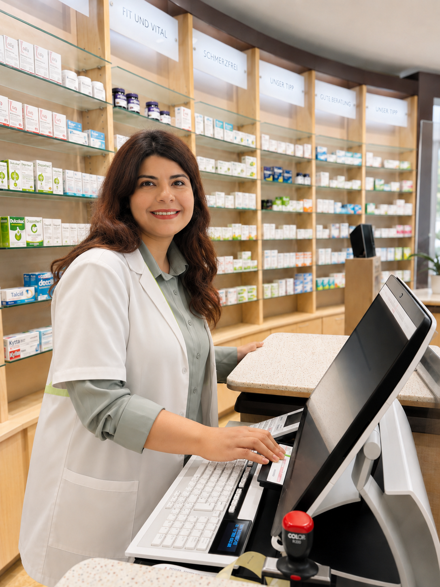

Kundenorientierung
Ich höre zu, berate verständlich und sorge dafür, dass jede Kundin und jeder Kunde die passende Lösung bekommt.
Nach meinem Pharmaziestudium habe ich rund zehn Jahre Berufserfahrung in Krankenhaus- und Offizin-Apotheken gesammelt. Seit 2022 arbeite ich in Apotheken in Deutschland; seit rund eineinhalb Jahren bin ich freiberuflich als Vertretungsapothekerin tätig.
Meine Schwerpunkte liegen in der Rezeptabgabe, Patientenberatung, Arzneimittelsicherheit, Medikationsanalyse, professionellen Kundenbetreuung sowie in der Unterstützung bei Lager und Arbeitsabläufen. Ich bin es gewohnt, Apothekenteams im anspruchsvollen Tagesgeschäft zu entlasten, mich schnell in neue Abläufe einzuarbeiten und Team wie Kundschaft zuverlässig und ruhig zu unterstützen. Zusätzlich verfüge ich über Fachkenntnisse in Impfleistungen sowie in der Abgabe, Prüfung und Dokumentation von Medizinalcannabis.
Ich verfüge über eine Qualifikation in [Zertifikat / Qualifikation Platzhalter]; eine weitere Zertifizierung in [Zertifikat Platzhalter] befindet sich aktuell in Vorbereitung.
In meiner Arbeit sind mir professionelle Teamarbeit und eine sehr gute Kundenbetreuung gleichermaßen wichtig. Eine gut geführte Apotheke lebt für mich davon, das Team zu entlasten und Kundinnen und Kunden aufmerksam, verständlich und verlässlich zu beraten.
Mein langfristiges Ziel ist es, eine eigene Apotheke zu besitzen und zu führen. Das motiviert mich, meine Beratungs-, Führungs- und Organisationskompetenz kontinuierlich weiterzuentwickeln.

Sprachen, in denen ich Kund*innen, Ärzt*innen und Teams sicher beraten kann.
Ich höre zu, berate verständlich und sorge dafür, dass jede Kundin und jeder Kunde die passende Lösung bekommt.
Ich nehme Sorgen ernst, ohne mich von schwierigen Situationen vereinnahmen zu lassen — mit Ruhe und Verständnis.
Klar, respektvoll und auf Augenhöhe — im Team, gegenüber Ärztinnen und Ärzten und im Kundengespräch.
Ich passe mich an neue Teams, Warenwirtschaftssysteme und Arbeitszeiten an — von Notdienst bis Urlaubsvertretung.
Ich füge mich schnell in bestehende Abläufe ein, unterstütze das Team und entlaste die Apothekenleitung spürbar.
Fundierte Ausbildung, breite Berufserfahrung und professionelles Auftreten sorgen für verlässliche Entscheidungen im Apothekenalltag.
Mit diesen Warenwirtschafts- und Laborprogrammen habe ich bereits Erfahrung gesammelt.